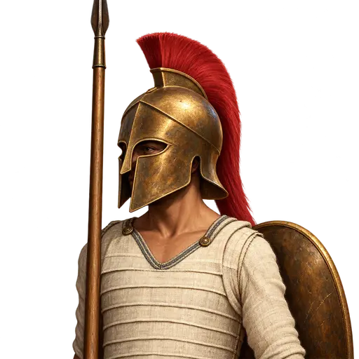
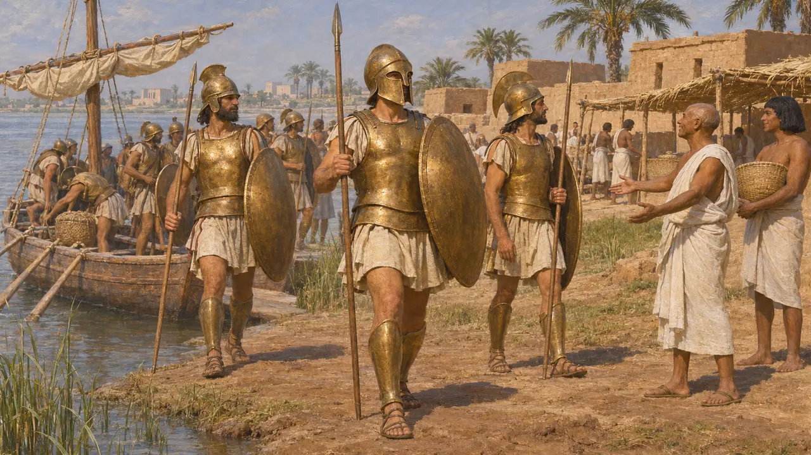
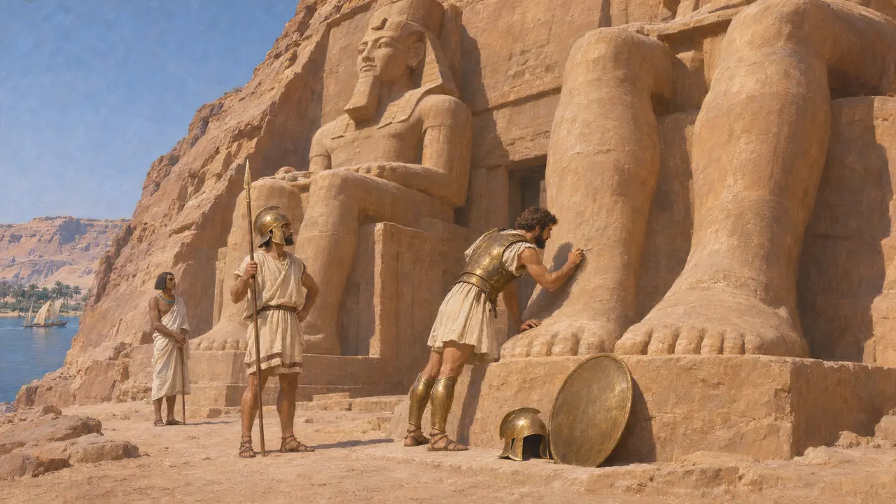
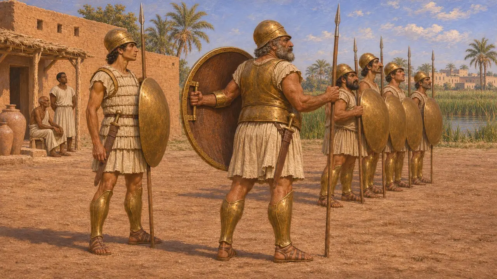
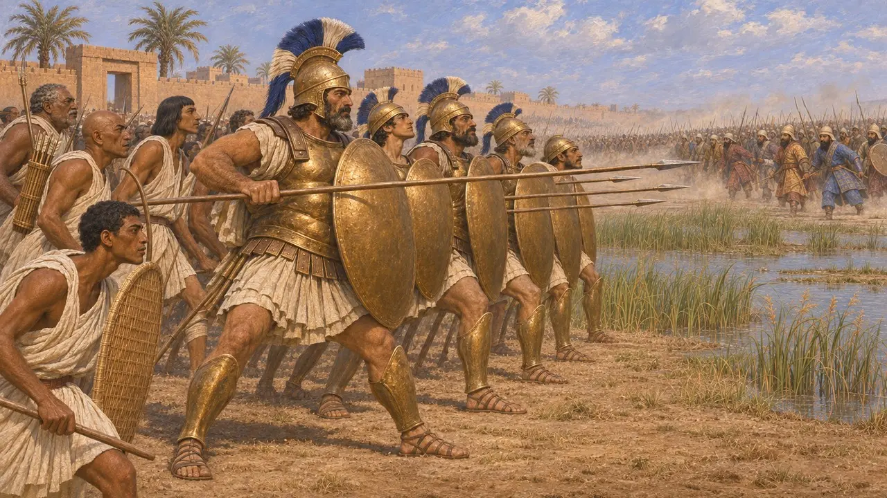
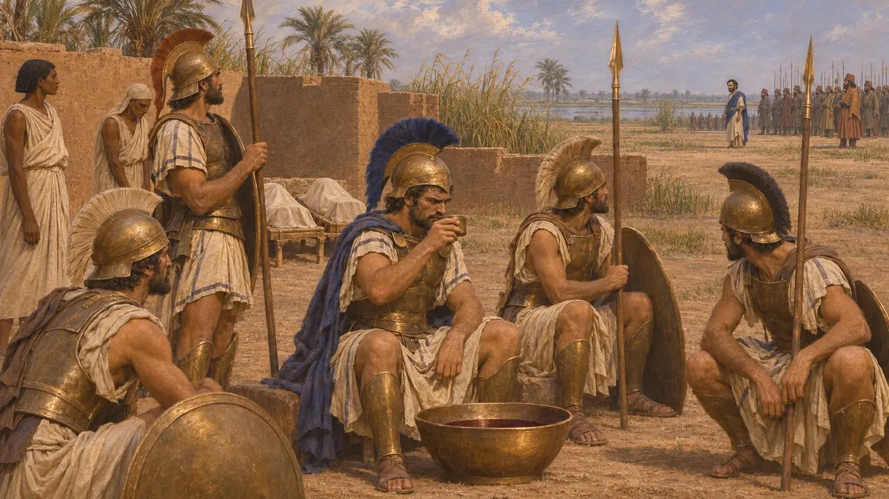

هوبليت يوناني مرتزق
مشاة يونانيون ثقال مأجورون، في خدمة مصر أساسًا، نحو 664-525 ق.م
خدم الهوبليت اليونانيون الذين قاتلوا مقابل أجر حكامًا أجانب قبل وصول الفرس إلى بحر إيجة بزمن طويل. فقد اعتمد ملوك الأسرة الصاوية في مصر اعتمادًا كبيرًا على الجنود الأيونيين والكاريين، وواجه أمثال هؤلاء الرجال قمبيز في بيلوزيوم عام 525. وقد جعلت منهم دروعهم وتشكيلهم المتراص خصومًا أشداء، ويدل وجودهم على مدى انتشار فنون الحرب اليونانية في شرق البحر المتوسط.
في اللعبة: تُدخلهم اللعبة جنودًا مدرَّعين يحملون التروس من أعداء الملك، تختلف أسماؤهم بحسب المستوى، يصمدون أمام الرمّاحين والخيّالة لكن الرماة يُنهكونهم. والواقع أن الخيّالة والرماة الفرس ضايقوا الهوبليت مضايقة شديدة في بلاتيا.

رجال من البرونز قادمون من البحر
رواية قديمةيقول هيرودوت إن بسماتيك الأول ظفر بعرشه بفضل غزاة أيونيين وكاريين في دروع برونزية، ثم منحهم أرضًا على الفرع البيلوزي من النيل تُدعى «المعسكرات». ويضيف أن أحمس نقلهم لاحقًا إلى منف ليكونوا حرسه. وينسب هيرودوت أيضًا إلى أبريس 30,000 مرتزق كاري وأيوني، وهو رقم يُرجَّح أنه مبالغ فيه.
Herodotus 2.152-154, 2.163

أسماء منقوشة في أبو سمبل
في السجلاتنحو سنة 591، خطّ جنود يونانيون في حملة بسماتيك الثاني على النوبة أسماءهم على سيقان تماثيل رمسيس الثاني الضخمة في أبو سمبل. وتذكر هذه الكتابات رجالًا من مدن أيونية ودورية، وتشير إلى قادة منفصلين للمصريين وللجنود الناطقين بلغات أجنبية. وهي باقية إلى اليوم من أقدم النقوش اليونانية المؤرَّخة.
R. Meiggs and D. Lewis, Greek Historical Inscriptions, rev. ed. 1988, no. 7

عتاد الهوبليت
في السجلاتتكشف الخوذ وواقيات الساقين والتروس المستخرجة بالتنقيب، وكثير منها نُذر في أماكن مقدسة مثل أولمبيا، عن عدّة الهوبليت: خوذة برونزية، وواقيان برونزيان للساقين، وترس مستدير كبير يُمسك بحزام للذراع ومقبض لليد. وقد بقيت دروع صدرية برونزية، كما تُظهر رسوم الأواني دروعًا من طبقات الكتّان. وكان يقاتل برمح للطعن ويحمل سيفًا قصيرًا. وكانت العدّة ثقيلة باهظة الثمن، وأنجع ما تكون في صفّ متراصّ على أرض مستوية.
A. Snodgrass, Arms and Armour of the Greeks, 1967

فانيس والمعركة عند بيلوزيوم
رواية قديمةيروي هيرودوت خبر فانيس الهاليكارناسي، أحد المرتزقة اليونانيين في خدمة أمازيس، الذي فرّ إلى قمبيز وأشار عليه بعبور الصحراء بعون ملك العرب. وفي سنة 525 ق.م لقي الفرس جيش بسماتيك الثالث، وفيه يونانيون وكاريون، عند بيلوزيوم فهزموه. ويقول هيرودوت إنه رأى بعد ذلك عظام القتلى ما تزال ملقاة في ساحة المعركة.
Herodotus 3.4, 3.7, 3.11-12

أبناء فانيس
أسطورة لاحقةويروي هيرودوت أيضًا أن المرتزقة الذين في خدمة مصر أخرجوا قبل المعركة أبناء فانيس، وذبحوهم على مرأى من أبيهم، وشربوا دماءهم ممزوجة بالنبيذ. ولا يؤكد أي مصدر آخر هذه القصة، فهي تُقرأ حكايةً عن الخيانة والانتقام، والأجدر أن تُعامل على هذا الأساس.
Herodotus 3.11
المصادر
- Herodotus, Histories 2.152-154, 2.163, 3.4-12
- R. Meiggs and D. Lewis, Greek Historical Inscriptions, rev. ed. 1988, no. 7
- M. Trundle, Greek Mercenaries, 2004
- A. Snodgrass, Arms and Armour of the Greeks, 1967
- H. W. Parke, Greek Mercenary Soldiers, 1933